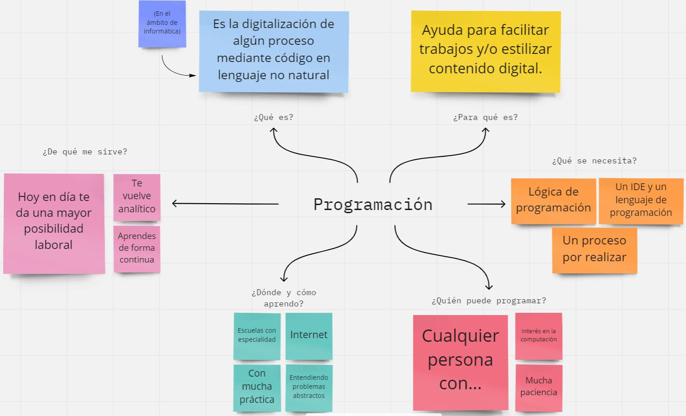
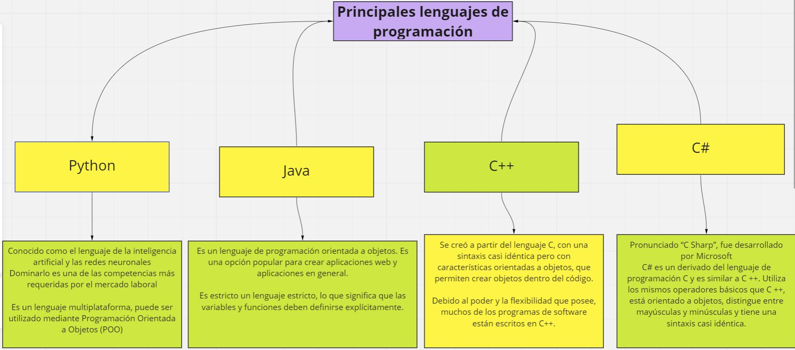

Inicio
Léeme
Pruébame
Auto Evaluación
Referencias
Puedes emmpezar a leer un poco sobre la programación y algunos de los lenguajes que mas competen en la actualidad

Ahora que sabes un poco sobre la programación, centremonos un poco en los lenguajes de los que has oído hablar

Si tienes tiempo, revisa este breve vídeo